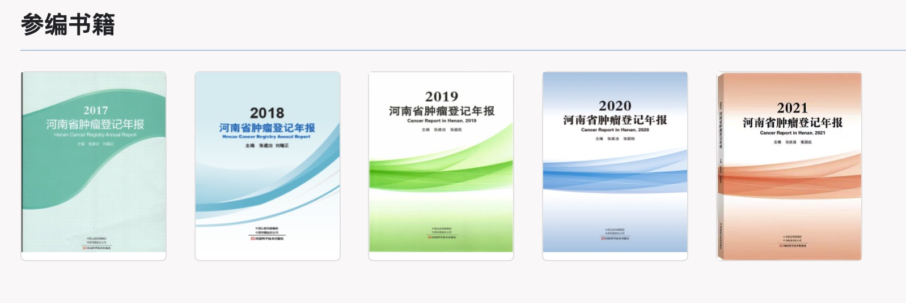
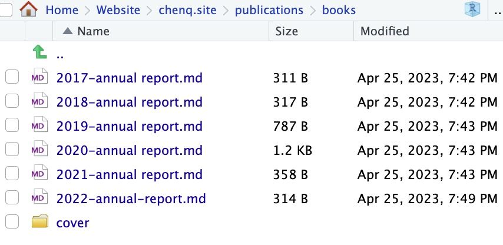
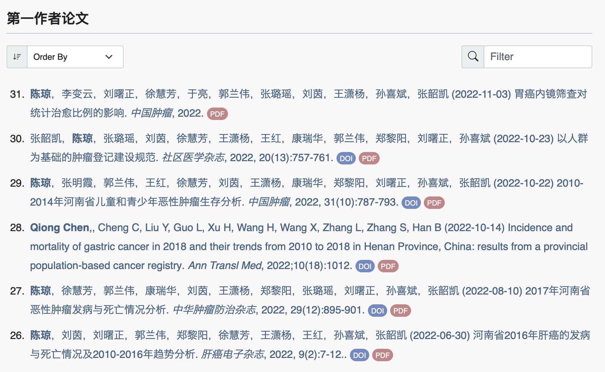
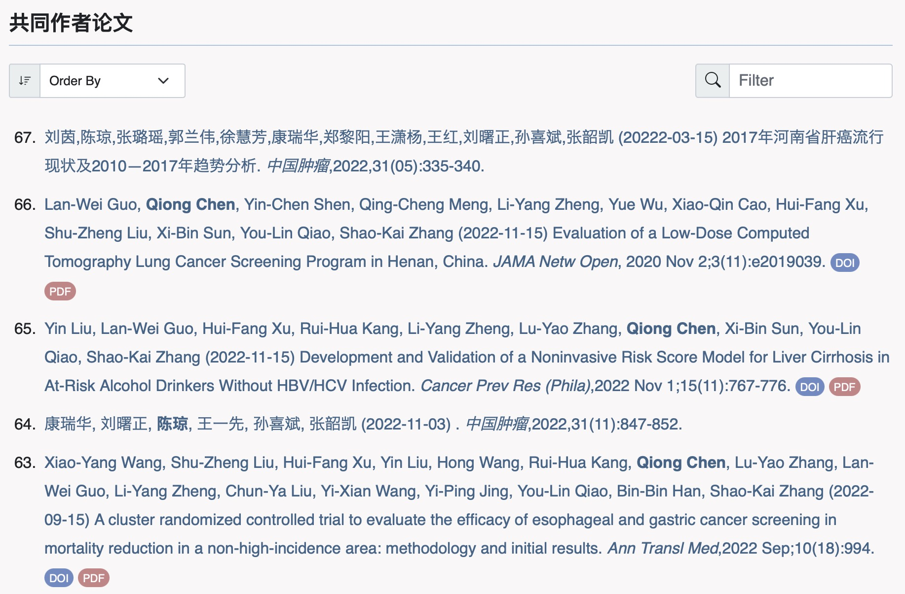
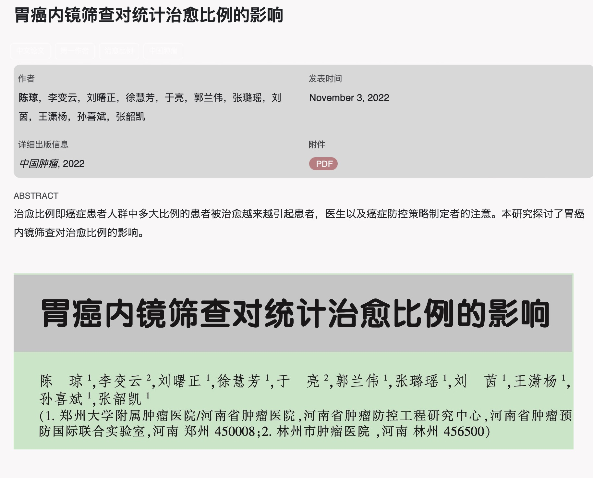

基于EJS模板进行Quarto个人网站(博客)列表页面的个性化样式设置
2023年4月26日
个人网站
quarto
列表
1 什么是列表页面？
我们在使用Quarto制作网站或者博客的时候，有一种页面类型是列表页面（listing），列表页面是从Quarto文档或其他自定义数据列表中自动生成的页面（或页面区域）的内容。
列表对于创建博客、为大量文档提供导航或任何其他您希望随着文档的添加、更新和删除而自动更新页面内容的场景非常有用。
举个具体的例子，我想在自己的个人网站中展示学术成果列表，每个成果单独以一个md或quarto文档保存在相应的位置，成果列表自动根据所有的md或quarto文档生成。
那么列表页面就是自动生成的页面，我的网站成果列表页面包括三个列表（图 1 图 3 图 4）。
第一个列表(图 1)展示了我所参与编写的书籍，这个列表只展示了图片，它是自动从不同的markdown文档(图 2)的yaml元数据中提取信息组成了列表。

第二个列表(图 3)展示了我以第一作者身份发表的学术论文，这个列表展示了作者、标题、发表时间、期刊名称及期刊详细信息等，这些信息来自于相应位置的markdown或quarto文档的yaml元数据。
下面是(图 3)的第一个列表元素对应的quarto文档的yaml元数据。
---
title: 胃癌内镜筛查对统计治愈比例的影响
author: <strong>陈琼</strong>，李变云，刘曙正，徐慧芳，于亮，郭兰伟，张璐瑶，刘茵，王潇杨，孙喜斌，张韶凯
date: '2022-11-03'
slug: screening-cure
categories:
- 中文论文
- 第一作者
- 治愈比例
- 中国肿瘤
tags:
- 肿瘤登记
- 治愈比例
- 胃癌
- 内镜筛查
details: <em>中国肿瘤</em>, 2023,32(1):27-32
doi: 10.11735/j.issn.1004-0242.2023.01.A005
file: cure.pdf
Keywords:
- 中国肿瘤
- 治愈比例
- 治愈模型
- 胃癌内镜筛查
abstract: '治愈比例即癌症患者人群中多大比例的患者被治愈越来越引起患者，医生以及癌症防控策略制定者的注意。本研究探讨了胃癌内镜筛查对治愈比例的影响。'
image: preview.jpg
---

如果设置了列表页面，Quarto会根据markdown文档或quarto文档的yaml元数据生成一个列表，同时也会生成一个单独的页面存放这个文档的内容，还拿刚才(图 3)列表的第一个元素为例，它不仅生成了该列表里的第一个元素，也生成了下面的单独页面（图 5）。

2 如何设定列表页面
2.1 指定列表内容
我们可以通过在yaml元数据listing设置contents选项来控制哪些文档放入到列表中，下面的语句就是把firstauthor文件夹中的所有文档均放入id号是firstauthor的listing列表中。
yaml
---
title: "Listing Example"
listing:
- id: firstauthor
contents: firstauthor
---2.2 设定列表类型
Quarto包含三种内置的列表类型供我们选择，通过type选项来选择listing列表的外观。
这三种内置的列表类型为：
- default 博客类型列表项目
- table 表格类型列表
- grid 格子类型列表卡
yaml设置语句如下：
三种类型的列表显示效果如下：


什么是EJS
EJS 是一套简单的模板语言，帮你利用普通的 JavaScript 代码生成 HTML 页面。EJS 没有如何组织内容的教条；也没有再造一套迭代和控制流语法；有的只是普通的 JavaScript 代码而已。
“E” 代表什么？可以表示“可嵌入（Embedded）”，也可以是“高效（Effective）”、“优雅（Elegant）”或者是“简单（Easy）”。